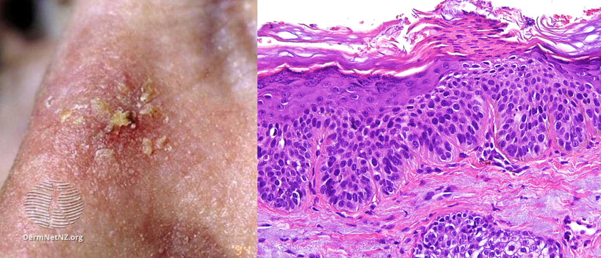

角化棘皮瘤(keratoacantoma)
- 為SCC的癌前病變
- 生長快速的單一凸起結節、中央有佈滿鱗屑之凹陷(像火山口被填滿)
- 好發部位：日曬處
光化性角化症(Actinic
keratosis)=日光性角化症(Solar keratosis)
- 長期累積紫外線(UVB)傷害所致的皮膚角質層增生
- SCC的癌前病變
- 單顆進展成SCC機率小，但10顆惡化成為SCC的機率可達10~15%
- 好發位置：易曝曬在陽光下的部位，大多分布在臉部、頭部、頸部、手、胸口
- 常見族群：
- 膚色淺：白種人(Skin phototype
I~III) > 黃種人、黑人
- 常需日曬工作者如農夫、工人、水手
- 中年男性
- 免疫抑制、器官移植
- 可分數種亞型(萎縮型、增厚型、色素擴散型、增生型、苔癬型及類波文氏型)
- 臨床表現：
- 皮膚表面粗糙、有皮屑及脫皮現象之斑塊或丘疹，或是扁平稍具鱗狀的斑點。顏色大多呈現淺紅色、棕色，常被誤認為脂漏性角化症或濕疹
- 病理特徵為局部表皮層角質化不全(parakeratosis)或角質化不良 (dyskeratosis )，併有顆粒層喪失、非典型角質細胞(atypical
keratinocytes )增生，但不像Bowen's disease是整層epidermis都有atypia的情形
- Atypia：細胞大小形狀不一(pleomorphism)、nuclear
hyperchromatism、increased mitosis

- 處置：
- 防曬
- 單一病灶：
- 刮除(curettage)、電燒、冷凍治療、手術切除
- 多重病灶：
- 局部塗抹藥劑：治療菜花的藥(?)
- Imiquimod：免疫調節劑，可刺激皮膚的免疫反應，由自身的免疫系統來攻擊不正常增生的表皮細胞
- 5-FU (fluorouracil)：抑制DNA合成和複製，導致分生不良細胞死亡。但較具刺激性，可能會有灼熱刺痛感及造成皮膚潰瘍
- 三氯醋酸(Trichloroacetic acid, TCA)：很強的蛋白質變性劑，用於化學換膚，使病灶被破壞脫落，幾週後長出新皮膚，穿透性良好適合移除較深層的病灶，
皮膚刺激感也較強烈
- 光照動力療法(photodynamic therapy)：靜脈注射光感物質，再給特定的光照射激發光感物質產生光化學反應，製造出對細胞具有毒性的自由基，選擇性消滅不正常細胞
SCC in situ
波文氏症(Bowen's
disease)=皮膚上的SCC
in situ
Erythroplasia=生殖器上SCC in situ(在glans penis的加上of Queyrat)
- 致病因子：紫外線、HPV、砷中毒、瀝青或焦油接觸
- 外觀上為單一或多個粉紅色或棕色脫屑斑塊，邊界明顯但不規則，表面過度角化，可附痂皮。緩慢向周圍擴大，但中央無癒合現象
- 病理上可見整層表皮(Epidermis)分布，排列不規則的atypical
keratinocyte (細胞大小形狀不一、hyperchromatism、mitosis)，不過基底膜是完整尚未被侵犯的
- 治療：
- 局部塗抹 5-Fluorouracil cream 或 Imiquimod (
Aldara )
- 冷凍療法：效果好
- 光動力療法
- 第二常見的皮膚癌，源自表皮層中的角質細胞(keratinocyte)
- 好發年老男性
- 危險因子：
- 陽光、輻射、砷、瀝青或焦油的暴露史
- 白人(Skin
phototype type I & II)
- Immunosuppression：器官移植服用免疫抑制劑或AIDS
- 好發位置：陽光容易長期照射的部位(頭皮、鼻子、下唇、耳朵、手背或手臂)
- 初期為皮膚加厚，產生鱗狀脫屑性斑塊或結節，之後會迅速生長擴散呈現潰瘍，易流血且碰觸即痛。周圍併有隆起硬化之邊緣，潰瘍表面有痂皮覆蓋，底下則有紅色肉芽組織。故身上有出現難以癒合的傷口或潰瘍須注意，盡早發現治療。
- 病理下為惡性的角質細胞穿過基底膜向下侵犯致真皮層，依分化情形可在分為Differentiated SCC 和 Undifferentiated
SCC
- Marjolin ulcer
- 發生在燒傷瘢痕潰瘍的皮膚腫瘤
- context of chronic wounds
including burn injuries, varicose veins, venous ulcers, ulcers from
osteomyelitis, and post radiotherapy scars
- 生長緩慢，無痛，由於局部破壞淋巴通道而沒有淋巴擴散
- 組織學：well-differentiated
squamous cell carcinoma
- 預後：侵犯性高、局部擴散、預後差
- 治療
- 外科切除：首選，如果病灶過大可合併植皮或皮瓣移植
- Margin free：切除範圍外4~6mm正常
- 深度：切到mid-subcutaneous
adipose tissue
- 顯微手術(Mohs Micrographic surgery,MMS)或放射治療：
- 針對顏面的「危險地帶」，例如鼻唇區域、眼睛周圍、眼瞼、耳道、耳後或頭皮，因結構脆弱、手術易出血且考量顏面美觀
- 莫氏切除手術Mohs Micrographic surgery
- 先移除最表層的病灶，再一層一層深入移除，每層都進行顯微鏡檢査確定確定有free margin再切下一層，精確的移除所有病灶且避免切除過都的良性組織，造成傷口過大影響癒合
- 治癒率高、復發率低、且可保留較多的正常皮膚組織，為當前皮膚癌手術切除的主流
- Indication：
- High risk
of local recurrence
- Need for
tissue preservation
- 冷凍療法或電燒：較小病灶可考慮
- Curettage and electrodessiccation(C&E)：MMS或切除不適用的low-risk SCC
- Contraindication：有毛髮的皮膚(因可能腫瘤藏在follicle)、吃超過真皮
- 化學藥物、光動力學
- 藥物選擇
- Immune
checkpoint inhibitors Anti PD-1 (e.g., pembrolizumab, cemiplimab)
- Chemotherapy (e.g.,
cisplatin, carboplatin, 5-FU, paclitaxel)
- Epidermal growth factor
receptor inhibitors (e.g., cetuximab)
- 人類最常見的皮膚癌
- 由表皮最底層之基底細胞轉變而來
- 流行病學：
- 發病年齡多大於40歲
- 男性>女性
- 白人(Skin
phototype I & II)較常見，少見於黑色或褐色人種
- 致病因子：多和紫外線照射(主要為UVB)或PTCH gene mutation、砷的接觸史有關
- 好發位置：頭頸部，尤其是鼻子、眼瞼(下眼瞼為主)和臉頰
- 局部侵犯性(local aggressive
invasion)，少有轉移，預後良好
- 臨床表徵：
- 皮膚表層可見無法移動的硬腫塊，
無疼痛感、表面發亮蠟狀像珍珠(pearly)並於皮膚表淺可見末梢血管擴張現象(telangiectasia)
- =rodent ulcer(像被老鼠咬到)病灶中央潰瘍，外緣不規則隆起，有如火山口，少有結痂脫屑(和SCC的鑑別)
- 可再細分為五種型態：
- Nodular：最常見，外觀即為前述之典型臨床表徵
- Superficial：表面稍微隆起珍珠樣的滾邊，中心部位常出現表淺性潰瘍和痂皮，呈浸潤性紅斑。類似濕疹或銀屑病變
- Pigmented：除了多了色素(藍、黑或褐色)的沉澱外，外觀與nodular BCC相似， 易和黑色素細胞瘤弄混
- Morpheaform：=sclerotic(硬斑)，扁平或輕度凹陷之淡色斑塊，邊界不明顯，表面也可見血管擴張現象，較惡性、較易轉移
- Basosquamous：BCC+SCC，比較惡性
- 病理上常見基底細胞從表皮向真皮層內蔓延生長，基底細胞呈現核大細胞質少(n/c ratio高)的現象，腫瘤細胞團塊(nest of basaloid
cells)基質會萎縮，造成腫瘤周邊出現空白間隙(retraction artifact)，像是孤島(tumor island)，團塊最外圈細胞成柵狀排列(palisading cells)
- 處置：癌細胞生長速度緩慢，一般只會局部浸潤，極少發生遠端轉移，所以致死率極低，治癒率高達95%以上
- 外科切除：首選，如果病灶過大可合併植皮或皮瓣移植
- Margin free：切除範圍外4~6mm正常
- 深度：切到mid-subcutaneous
adipose tissue
- 顯微手術(Mohs Micrographic surgery,MMS)或放射治療：
- 針對顏面的「危險地帶」，例如鼻唇區域、眼睛周圍、眼瞼、耳道、耳後或頭皮，因結構脆弱、手術易出血且考量顏面美觀
- 莫氏切除手術Mohs Micrographic surgery
- 先移除最表層的病灶，再一層一層深入移除，每層都進行顯微鏡檢査確定確定有free margin再切下一層，精確的移除所有病灶且避免切除過都的良性組織，造成傷口過大影響癒合
- 治癒率高、復發率低、且可保留較多的正常皮膚組織，為當前皮膚癌手術切除的主流
- Indication：
- High risk
of local recurrence
- Need for
tissue preservation
- 冷凍療法或電燒：較小病灶可考慮
- Curettage and electrodessiccation(C&E)：MMS或切除不適用的low-risk SCC
- Contraindication：有毛髮的皮膚(因可能腫瘤藏在follicle)、吃超過真皮
- 化學藥物、光動力學
- 藥物選擇
- Hedgehog pathway inhibitors
(e.g., vismodegib, sonidegib)
- Immunotherapy(cemiplimab)
- 黑色素細胞經癌化生成的皮膚癌，時常經由淋巴轉移
- 致死率極高的皮膚腫瘤，預後不佳
- ABCDE rule：病患臨床上有以下特徵時，需懷疑為黑色素細胞瘤
- Asymmetry：形狀不對稱
- Border irregular：邊緣不規則、有突起或是表面潰瘍
- Color variation：顏色斑駁不一致
- Diameter >6 mm：直徑大於 6 mm
- Enlargement：短時間內持續增大；Elevation：表面不規則隆起
- 危險因子：
- BRAF gene突變(50%)
- V600E mutation(最常見)：在第600位上以glutamic
acid取代valine
- CDKN2a (tumor
suppressor gene)突變
- 白人(Skin
phototype type I & II)
- Sun exposure or radiation
exposure
- Family or personal history
- 身上超過50顆且大於5 mm的黑色素母斑(melanocytic nevi)
- 常見突變：
- 西方：BRAF>NRAS(佔50-80% cutaneuous
melanoma)
- 家族遺傳型：CDKN2a (tumor
suppressor gene)突變
- Melanoma的生長期依序為：
- 輻射生長期(radial growth phase)：此期melanoma生長局限在上皮層、呈水平輻射擴散，生長速度緩慢，較不具侵犯性
- 垂直生長期(vertical growth phase)：侵犯到真皮層及鄰近血管，因而藉由血管、
淋巴管擴散至他處
- 黑色素細胞瘤可分為以下四種主要亞型：
- Superficial spreading
melanoma(70%)：最常見，較常見BRAF
- 40 - 50 歲歐美白種人最常見之黑色素細胞瘤
- 好發於女性下肢和男性上背(間斷靂露的曰曬處(intermittent
sun exposure))，病灶特徵相當符合ABCDE rule
- 主要是表淺擴散(大而淺)，radial phase最多可長達兩年，之後才進入劇烈的vertical phase
- Nodular melanoma(15%)：第二常見，生長相當快速，預後最差
- 40-50 歲男性較多
- 無radial phase而直接進入vertical phase(快又深)，外觀為表面突起圓頂狀藍黑色痣(像藍莓)
- Acral lentiginous
melanoma(5-10%)：生長緩慢，多在後期才被發現，故預後差
- 東方人(29-46%)及非洲裔(60-72%)等有色人種最常見之黑色素細胞瘤
- 常見於大於60歲之老人，好發於手掌、腳掌或手指(腳趾)之甲床(huntchinson's
sign)
- Lentigo maligna melanoma(5%)：最少見，生長速度相當緩慢，較常見c-KIT
- 好發在老人日曬部位(臉、手臂)
- radial phase：=Lentigo Maligna或Melanoma in situ，可從數年到20年之久，外觀為扁平微突起之黑斑(macule)
- vertical phase：病灶轉為顏色和邊緣不一的丘疹或結節
- 檢查診斷：
- Hutchinson sign：指甲可見棕黑色色素從縱向延伸至近端和側邊皮膚，是Melanoma的重要指標(和帶狀皰疹眼病比較)
- 傳統檢查：包含胸部X光、abdominal
echo、CT或MRI等，以檢查是否有器官轉移。但須在腫瘤大於1公分以上才能顯像，且無法確定是否是真的轉移惡性腫瘤或其他良性的病變
- 前哨淋巴結(Sentinel
lymph node)切片：可以預測黑色素細胞瘤是否已經產生淋巴轉移
- 正子掃描造影(PET scan)：主要的目的在於手術前評估、早期治療成效及藥物治療效期之追蹤，來判斷惡性黑色素細胞瘤是否有轉移
- LDH：
- Metastatic
melanoma的病患會升高，但不適合用來作為偵測是否有轉移的指標(敏感度和特異性低)
- 黑色素細胞瘤轉移的病患，假使LDH升高其預後較不好
- 分期與處置
- 初級預防：防曬，篩檢
- 次級預防：早期偵測
- Melanoma對化學治療和放射線治療的反應並非十分良好，且容易轉移
- 以初步切片確認病灶深度
- 外科手術：目前最主要的治療方式，仍是早期發現趁病灶還很小就切除。肺、腦、胃腸單一病灶及局部淋巴轉移都可以採用
- 病灶深度以及轉移狀況決定是否需要sentinal lymph
node biopsy
- 若沒有distal meta但sentinal LN(+)→Radical lymph node
dissection
- 化學療法(以Dacarbazine/DTIC為主)、放射線療法：輔助性療法， 常配合手術切除後使用
- 免疫細胞療法：直接或間接使用患者的免疫系統，注射基因改造過的免疫細胞
(例如CD8
+ T cell)，使其能鎖定並攻擊癌細胞，為目前提倡之新療法
- 標靶療法：目前針對晚期轉移性病患
- Vemurafenib：針對特定基因BRAF V600E位置突變
- 預後：
- Tumor thickness：最重要的預後因子，越厚預後越差，厚度＜
0.76 mm的 8-year survival rate 為 93.2%，＞3.6 mm
則為 33.3%
- 出現潰爛情形(Histologic
ulceration )
- 淋巴轉移(Lymph node
involvement)
- 衛星樣微轉移(microscopic
satellitosis，＞0.05 mm)
- 血管浸潤(vascular
invasion)
- 分裂指數高(mitotic rate ≧ 1 mitosis/mm )
卡波西氏肉瘤(Kaposi's
sarcoma, KS)
- 多發性血管腫瘤，由HHV-8所引起，好發於愛滋患者
- 唾液和口腔黏膜的病毒含量(30%) 遠高於肛門和生殖器(1%)
- 臨床表現
- 典型表徵：一開始為1~2公分之紫斑，後來進展為丘疹、斑塊、結節或腫塊，顏色為粉紅到深紫色，
無痛無癢感
- 單一深色斑塊，可演變成結節狀、藍色、黏膜下和疼痛性皮膚變化
- 侵犯內臟器官
- 較常發生在愛滋病患者，90%死於愛滋者，其屍體解剖可發現內臟侵犯
- 常見侵犯器官：胃、腸、肝、脾、肺、淋巴系統(造成淋巴水腫(lymphedema))
- 目前分為四型：
- 典型：好發於老年、東歐男性，好發自下肢形成暗紅凸起斑塊或結節，再逐漸往上擴張，伴隨下肢淋巴水腫
- 斑塊期(plaque
stage)→結節期(nodular stage)/腫塊期(tumor stage)
- 地域型(Endemic)：見於赤道非洲，好發兩個雙峰(大人(平均35歲)及小孩(平均3歲)。病灶較廣泛，進展快，也常侵犯內臟，若侵犯內臟，相當致命
- 因化療或器官移植而致免疫力低落者：少見，主要見於solid-organ移植並長期服用免疫抑制劑者，停止服用免疫抑制劑可以使症狀緩解
- 後天免疫不全症候群(AIDS)相關型：見於AIDS患者，此類幾乎只發生在男同性戀者，主要分布在臉上，然後迅速蔓延至軀幹
- 病理：
- 早期病灶：小血管異常增生伴隨發炎細胞浸潤為主，這些小血管缺乏基底膜而使得紅血球外滲和鐵血色素沉積。其血管內皮細胞較大且突岀於血管腔
- 成熟病灶：可見梭狀細胞(spindle cell)聚集成漩渦狀，形成不規則的血管間隙(irregular,
cleft/slit like, angulated vascular channel)，間隙內可見紅血球
- 治療：
- 放射治療：典型KS效果較佳
- 化學治療：地域性KS效果較佳
- 切除：單一或小範圍侵犯可達痊癒
- 局部療法：液態氮冷凍療法、雷射、電燒、光動力療法
- 因免疫抑制所引發KS者，停藥後常會自癒，也可嘗試換藥，如以sirolimus取代cyclosporin及 tacrolimus
- AIDS患者接受正統抗病毒治療即有療效，或使用干擾素及介白質治療，也可暫時改善